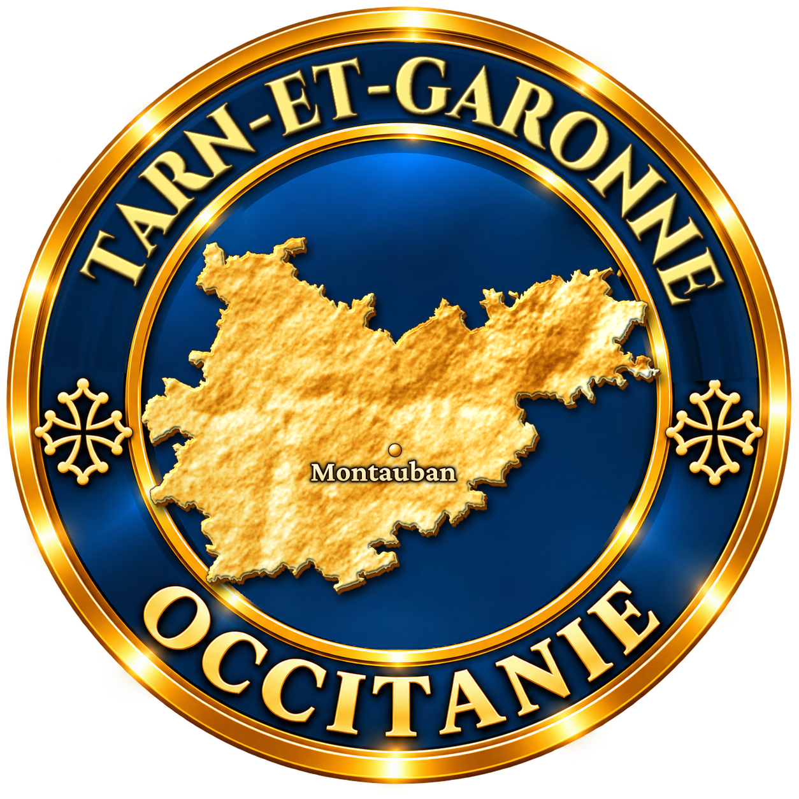
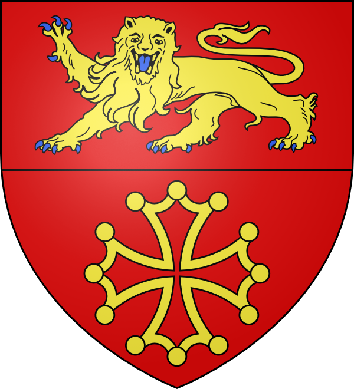
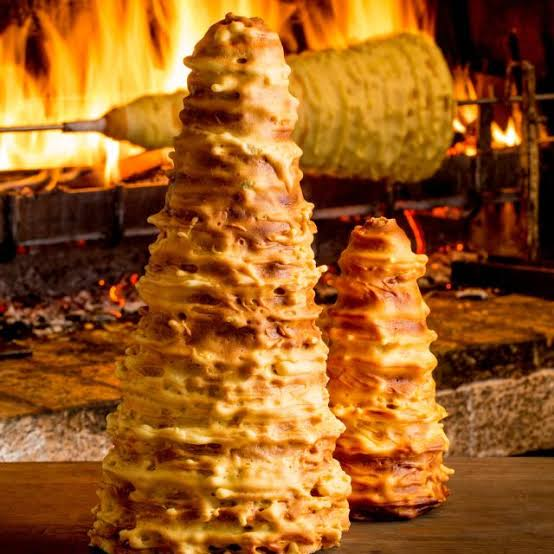

Le gâteau à la broche est sans doute le dessert le plus spectaculaire du Sud-Ouest. Cuit devant un feu de bois sur une broche tournante, il prend la forme d’un grand cône hérissé de pics dorés, comme un sapin de pâte. C’est le gâteau des grandes occasions, que l’on retrouve des Pyrénées au Midi toulousain et jusqu’au Tarn-et-Garonne.

Son berceau se situe dans les vallées pyrénéennes — Bigorre, Comminges, Ariège, Pays basque —, mais il est aussi ancré en Aveyron. Dans le Pays basque, on l’appelle katalanbroxa, littéralement « broche catalane ». Des gâteaux très proches existent ailleurs en Europe, comme le Baumkuchen allemand ou le šakotis lituanien.
Les origines précises restent discutées et entourées de légendes. Ce qui est certain, c’est que le gâteau à la broche était un gâteau de fête : on le préparait pour les mariages, les baptêmes, les communions et les grandes fêtes de village. Dans les noces traditionnelles, il trônait sur la table et pouvait être porté en cortège.
Sa cuisson est un véritable rituel. Un cône en bois ou en métal, enveloppé de papier beurré, est fixé sur une broche placée devant un feu vif. Pendant que l’un tourne la broche sans s’arrêter, l’autre verse la pâte liquide à la louche, couche après couche. Chaque couche cuit en quelques minutes avant que la suivante ne soit versée.
Les fameux pics se forment naturellement : en tournant, la pâte coule et fige en formant des stalactites. Le savoir-faire consiste à régler la distance au feu, la vitesse de rotation et la consistance de la pâte. Il faut plusieurs heures et des dizaines d’œufs pour obtenir un grand gâteau.
La pâte, proche d’un quatre-quarts, repose traditionnellement sur des proportions égales d’œufs, de sucre, de beurre et de farine, parfumée au rhum, à l’armagnac, à la fleur d’oranger ou au zeste de citron. Une fois refroidi, le gâteau se conserve plusieurs semaines grâce à sa cuisson lente.
Le gâteau à la broche est aujourd’hui célébré par la Confrérie du gâteau à la broche d’Arreau, dans les Hautes-Pyrénées, qui organise chaque année en juillet une fête dédiée, avec cuissons en direct au feu de bois. Des artisans spécialisés, souvent installés dans les Pyrénées ou dans le Midi toulousain, le fabriquent toute l’année.
Dans le Tarn-et-Garonne, le gâteau à la broche n’est pas né sur place, mais il s’y est diffusé à travers les fêtes, les marchés et les mariages, où il reste un symbole de convivialité. On le trouve chez certains pâtissiers et sur les étals d’artisans venus des départements voisins.
Servi en tranches découpées à l’horizontale, il se déguste avec un vin moelleux ou un café. Plus qu’un dessert, c’est un spectacle et une tradition partagée, qui rappelle que les grandes fêtes du Sud-Ouest se préparaient autour du feu.
Gâteau à la broche des Pyrénées : version de référence de la Bigorre et du Comminges, célébrée à Arreau chaque été.
Gâteau à la broche aveyronnais : tradition vivace du Rouergue, souvent parfumée au rhum.
Katalanbroxa basque : version des noces traditionnelles du Pays basque.
Mini-gâteaux à la broche : petits cônes individuels, plus faciles à transporter et à offrir.
Dans le Tarn-et-Garonne, le gâteau à la broche se trouve surtout lors des fêtes, sur les marchés et chez certains artisans, mais son berceau reste pyrénéen.
Montauban pâtisseries et marchés où des artisans proposent des gâteaux à la broche, entiers ou à la part.
Fêtes votives et marchés de village le gâteau y est souvent présenté et vendu par des artisans itinérants.
Mariages et baptêmes il reste la pièce montée traditionnelle des grandes célébrations du Sud-Ouest.
Arreau (Hautes-Pyrénées) hors du département, la fête annuelle de juillet est la référence pour découvrir sa cuisson au feu de bois.